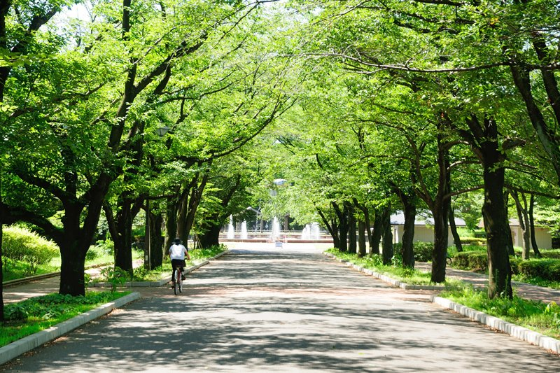
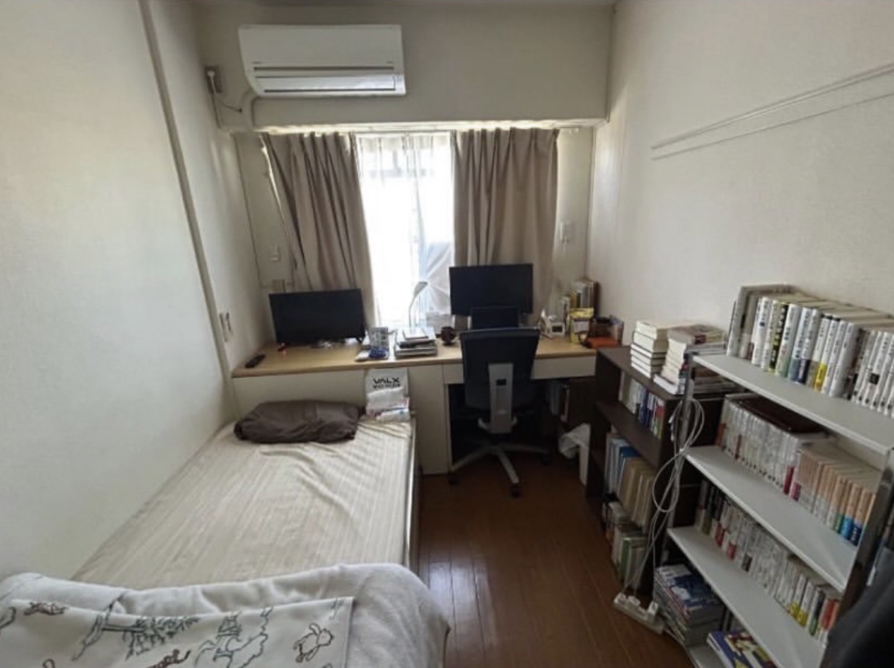
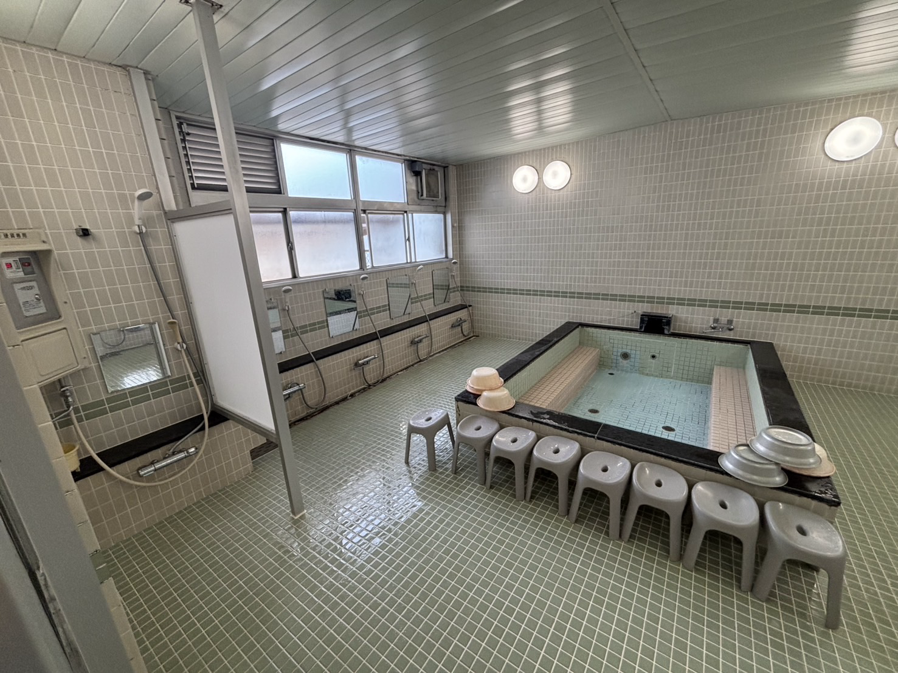

対象者
富山県出身で、首都圏の大学・大学院へ通う男子学生が対象です。入学見込み者と在籍者のどちらも含みます。
Overview / Facilities / History
富山県出身男子学生向けの東京学生寮「青雲寮」の概要ページ。対象者、費用目安、個室設備、食事、立地、沿革、建物設備を公式情報としてまとめています。
Overview
対象者、費用、個室、食事、立地、沿革、建物設備まで、青雲寮を検討する際に必要な情報をこのページでひと通り確認できます。
富山県出身で、首都圏の大学・大学院へ通う男子学生が対象です。入学見込み者と在籍者のどちらも含みます。
月額目安は約51,000円です。内訳は、寮費30,000円、食費約16,000円、基本料金負担金 月額約5,000円です。

Point
富山県出身で、首都圏の大学・大学院へ通う男子学生が対象です。入学見込み者と在籍者のどちらも含みます。
月額目安は約51,000円です。内訳は、寮費30,000円、食費約16,000円、基本料金負担金 月額約5,000円です。
全60室、8.5㎡の個室です。ベッド、机、椅子、エアコン、クローゼット、内線電話を備え、各室でWi-Fi・有線LANを利用できます。
朝食は6:30〜9:00、夕食は18:30〜21:00の朝夕2食です。日曜・祝日は休業で、生活のリズムを保ちやすい環境です。
立地と周辺環境、創設の背景、沿革、居室と共用施設の情報まで、入寮後の生活イメージにつながる内容を順に確認できます。
Location
富山県学生寮は、東京都府中市のほぼ中央に位置しています。周辺には大学をはじめとする教育機関や研究所などが数多く点在し、文教地区を形成しています。北には多摩霊園、浅間山公園、南には多摩川があり、落ち着いた住環境です。
府中市は、大国魂神社やけやき並木に代表される歴史と緑に囲まれた街です。京王線沿線の利便性があり、都心の大学はもちろん、多摩エリアや八王子方面の大学への通学にも適した環境です。

Foundation
地方から東京へ向かう学生の住環境を支えるために始まった寮です。
郷土の先輩、故・松村謙三先生は文部大臣当時、地方出身の学生の住宅問題を憂慮され、学生寮の建設を国・都道府県・財界人などに呼びかけられました。そのひとつとして、この財団法人富山県学生寮は創設されました。
創設から50年あまり、卒業生は1,100名を超え、政財界や教育界各方面に多くの人材を輩出しました。また、それら卒業生で構成された青雲会により、後輩への指導・支援が行われています。
History
富山県学生寮の建設について、当時の県知事・高辻武邦氏を中心に在京有志による協議がなされ、同年12月に財団法人として認可を受ける。
昭和31年に世田谷区赤堤で竣工した旧寮舎は66名収容です。県・市町村・国の補助金のほか、有志による寄付によって集められた建設資金で建設されました。この66名収容は旧寮舎の沿革情報であり、現在の府中寮舎にある60室の個室体制とは異なります。
建物の老朽化に伴い、府中市の現在地に移転し、同年9月に新寮が竣工。
創設50周年・府中移設20周年を迎え、記念式典と記念事業として大浴場改修工事を実施。
公益財団法人の認定を受ける。
Facilities

各居室は8.5㎡の個室で、学びと休息のための基本設備をあらかじめ備えています。共用空間には食堂、大浴場、学習室などがあり、生活と勉強の切り替えがしやすい構成です。



Next Step
入寮条件や提出書類の詳細は募集ページで、個別の確認事項は問い合わせページで確認できます。